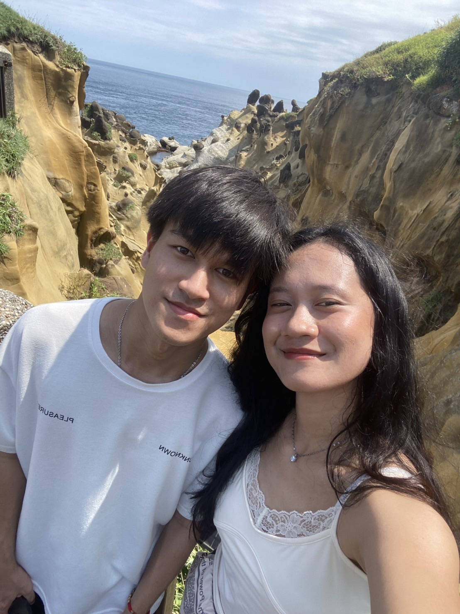
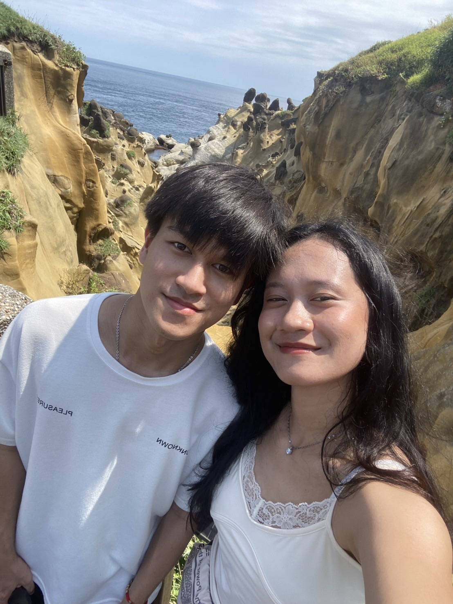

Happy Birthday, Aldi❤️
 

Selamat ulang tahun, Aldi ❤️😊
Semoga kamu selalu sehat dan bahagia, semoga kamu bisa cepat-cepat sukses dan pulang ketemu keluargamu lagi, semoga bisa betah di Top Union dan kalau ga betah pun semoga bisa cepat dapat pekerjaan baru, semoga di umur 24 ini Aldi bisa jadi orang yang lebih dewasa, bijaksana, dan banyak (mandi) tersenyum 😊 hehe
Trimakasi sudah mau jadi teman aku 2 tahun ini dan masih sabar dan memilih buat stay untuk berteman dan buat hidupku berwarna, semoga kita bisa jadi teman baik yang lama, maaf kalau selama pacaran atau temenan aku sering lepas kontrol emosiku, tapi aku sadar udah banyak belajar dan dikit2 bisa ngubah sifatku, jujur aku happy banget tiap ngomong sama kamu itu kamu bener2 good listener dan selalu ngehargai apa yang aku omongin, makasi banyak udah selalu effort buat aku happy, semoga kamu juga bisa menyadari hal-hal yang aku lakuin untuk buat kamu happy, i love when you are smiling so please keep doing that 😊, once again Happy Birthday, Di! meow meow meow ğŸ±